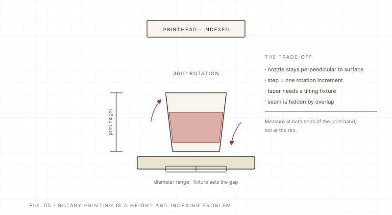

Process Advanced 6 min read Updated 2026-11
360° cylinder printing: it is a fixturing problem first
A rotary UV printer wraps the image around a rotating part while the head moves along the axis. Diameter, taper and runout decide the gap; the seam decides whether the job looks professional. Measure the part before you print it.
The short answer: on a cylinder, the machine can only be as good as the fixture. The part must turn true, the head must stay at a constant distance from the surface, and the image has to meet itself at the seam. If any of those three is wrong, resolution and ink will not save the job.
Measure before you print
- Diameter at both ends: a taper changes surface speed and therefore dot spacing along the axis.
- Out-of-round: an oval cup looks like a focus problem — the print goes soft at the wide points and sharp at the narrow ones.
- Runout and chuck pressure: a part that wobbles by a millimetre will hit the head or print a wavy band.
- Wall thickness and weight: thin, light parts need lower rotation speed and gentler clamping.
- Height reference: set the head gap from the highest point of the part, not from the table.
| Parameter | NC-CylinderElf-IV-D specification | What to watch |
|---|---|---|
| Diameter | Φ45–160 mm | Below/above the range needs a different fixture or machine. |
| Print length | 80–280 mm | Seam position depends on image length versus circumference. |
| Taper | < 5° | Tapered parts need the head to follow; keep the gap constant. |
| High drop | 2–20 mm | For stepped or irregular parts; higher drop means softer edges. |
| Speed | 30–180 s per piece | Slow down for thin walls and glossy surfaces. |

Controlling the seam
On a full wrap, the last pass meets the first and any small error becomes a visible line. Three things help: place the seam where the design can hide it (under a handle, at the back, on a dark area), give the overlap a little feathering rather than a hard edge, and keep the rotation speed constant through the seam. If the part has a raised logo or a step, plan the seam away from it — the high-drop head will change the edge sharpness there.
The buying question for a rotary machine is not the top resolution. It is the diameter and length range, the taper limit, the fixture set that comes with it, and how the machine measures the part. Those decide which jobs you can accept.
For short runs the setup usually costs more than the printing. Group parts by diameter and height, print one test piece per group, and keep a fixture log; the next batch of the same cup starts in minutes instead of an hour. On cylinders, a reprint is expensive, so five extra minutes on the first piece is the cheapest insurance.